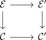
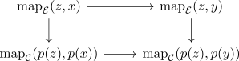

jurek - cartesian fibrations
Aspects
Let $p : Y \rightarrow W$ be a morphism of simplicial sets Then
- left join slice adjunction
- right join slice adjunction
- natural transformation from fat join to join as joyal equivalence
- joyal lifting critereon
Proof
Definition
Given

Let $p: \mathcal{C} \rightarrow \mathcal{D}$ be an inner fibration between infinity categories Then for $x,y \in \mathcal{C}$ the induced map
between the mapping spaces is a kan fibration
Proof
\begin{displaymath}
\begin{tikzcd}
\mathrm{map}_{\mathcal{C}}(x,y) \rar \dar & \mathrm{map}_{\mathcal{D}}(p(x), p(y)) \rar \dar & \Delta^0 \dar \\
\mathcal{C}^{/y} \rar & \mathcal{D}^{/p(y)} \times_{\mathcal{D}} \mathcal{C} \rar \dar & \mathcal{C} \dar \\
& \mathcal{D}^{/p(y)} \rar & \mathcal{D}
\End{tikzcd}
\end{displaymath}where
- right fibrations mirrored under pullbacks
- $\mathcal{C}^{/y} \rightarrow \mathcal{D}^{/p(y)} \times_{\mathcal{D}} \mathcal{C}$ is a right fibration by <>
- isofibration and mapping space of the fiber
- homotopy cartesian diagram of the fiber for the mapping space
- homotopy cartesian diagram of the fiber for the left mapping space
- homotopy cartesian diagram of the fiber for the right mapping space
- trivial fibration for a p-cartesian morphism and pullbacks
- homotopy cartesian diagram for the postcomposition with a p-caretsian morphism
Proposition
Let $p: \mathcal{E} \rightarrow \mathcal{C}$ be an inner fibration, $f: \Delta^1 \rightarrow \mathcal{E}, f: x \rightarrow y$ be p-cartesian and $z \in \mathcal{E}$ Then

is a homotopy-cartesian diagram
Proof
Let $p: \mathcal{E} \rightarrow \mathcal{C}$ be an inner fibration, $x,x',y \in \mathcal{E}$ and $f: \Delta^1 \rightarrow \mathcal{E}, f: x' \rightarrow y$ be p-cartesian. Assume furthermore that $p(x') = p(x)$.
Then

is a homotopy-cartesian diagram
- cartesian fibration
- cocartesian fibration
- left fibration as cocartesian fibration
- right fibration as cartesian fibration
- cocartesian fibration between infinity categories as isofibration
- cartesian fibration between infinity categories as isofibration
- cartesian fibration as right fibration and p-cartesian morphism
- cartesian fibration and kan complex
- Let $p: X \rightarrow Y, p': X' \rightarrow Y'$ be cartesian fibrations Then $f: X \rightarrow X'$
- Let $f: \mathcal{E} \rightarrow \mathcal{E}'$ be a morphism of cartesian fibrations $p: \mathcal{E} \rightarrow \mathcal{C}, p': \mathcal{E}' \rightarrow \mathcal{C}'$. TFAE:
- $f$ is a joyal equivalence
- $E_x \rightarrow E_x'$ is a joyal equivalence for all $x \in X$
Proof
1) $\implies$ 2)
2) $\implies$ 1)
Let $E_x \rightarrow E_{x'}$ be joyal equivalences for $x \in X$. Then take $y' \in \mathcal{E}'$ and $x = p'(x')$. Then it follows for each $y \in \mathcal{E}_x$ such that $f(y) \cong y'$ in $\mathcal{E}_x'$ that $\mathcal{E}_x'$
fully faithful Want to show that $\mathrm{map}_{\mathcal{E}}(x,y) \rightarrow \mathrm{map}_{\mathcal{E}'}(f(x), f(y)$ is a simplicial homotopy equivalence Then for $x', x, y \in \mathcal{E}$ we may choose a \(p\)-cartesian lift $\tilde{a}: x' \rightarrow y$ of $a$